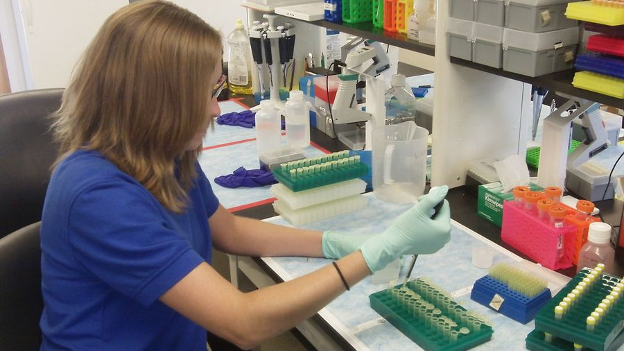
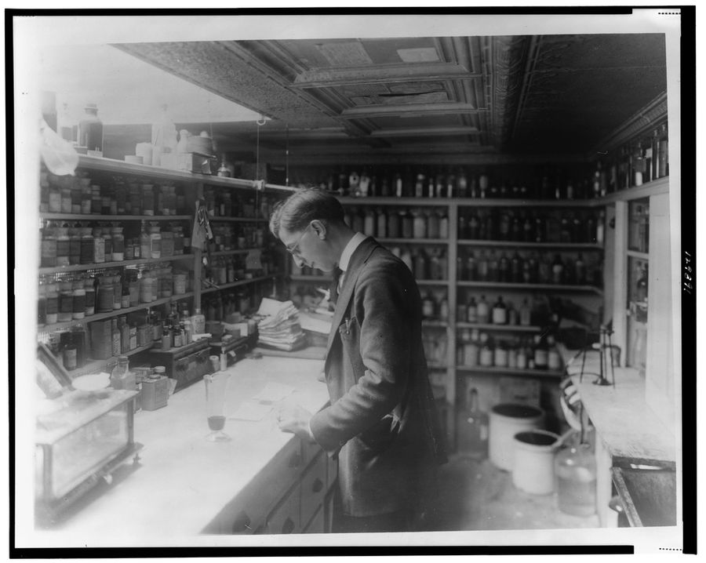

🇯🇵 日本 1件
 信仰を理由に輸血拒否、医療機関の対応は 全国で訴訟相次ぐ
信仰を理由に輸血拒否、医療機関の対応は 全国で訴訟相次ぐ🇺🇸 アメリカ 3件
 キャサリン妃のがんドキュメンタリー『Heal』：3つのポイントPrincess Kate’s Cancer Documentary ‘Heal’: 3 Takeaways今週公開された30分の公認ドキュメンタリー『Heal』は、2024年のがんの診断と治療以来のキャサリン妃の回復の一端を紹介している。健康を実感するフリーエージェントのウッドラフ、’27年の登板を見据えるFeeling healthy, free agent Woodruff sets sights on pitching in '27
キャサリン妃のがんドキュメンタリー『Heal』：3つのポイントPrincess Kate’s Cancer Documentary ‘Heal’: 3 Takeaways今週公開された30分の公認ドキュメンタリー『Heal』は、2024年のがんの診断と治療以来のキャサリン妃の回復の一端を紹介している。健康を実感するフリーエージェントのウッドラフ、’27年の登板を見据えるFeeling healthy, free agent Woodruff sets sights on pitching in '27 認知症のリスクを下げる12の戦略。始めるにはこのクイズを受けよう12 strategies to cut your risk of dementia. Take this quiz to startこのホリデーシーズンに家族や友人と集まるときにできることがある。無料の5分間クイズを受けて、脳の健康状態を評価してみよう。あなたは…を学ぶことになる。
認知症のリスクを下げる12の戦略。始めるにはこのクイズを受けよう12 strategies to cut your risk of dementia. Take this quiz to startこのホリデーシーズンに家族や友人と集まるときにできることがある。無料の5分間クイズを受けて、脳の健康状態を評価してみよう。あなたは…を学ぶことになる。🇨🇳 中国 1件
 WHOが警鐘、はしか対策が停滞：「はしかが戻ってきた」WHO sounds alarm as measles fight falters: ‘it is back’世界保健機関（WHO）は金曜日、はしかについて警鐘を鳴らし、誤情報や偽情報の増加の中で撲滅に向けた進展が停滞していると警告した。
WHOが警鐘、はしか対策が停滞：「はしかが戻ってきた」WHO sounds alarm as measles fight falters: ‘it is back’世界保健機関（WHO）は金曜日、はしかについて警鐘を鳴らし、誤情報や偽情報の増加の中で撲滅に向けた進展が停滞していると警告した。🇬🇧 イギリス 13件
ウェールズ公妃のドキュメンタリー『Heal』、がん治療後の「巡礼」をたどるPrincess of Wales documentary Heal charts ‘pilgrimage’ after cancer treatmentBBCの作品は、化学療法後の人生がどのようなものになり得るかを探るため、スリー・ピークス・チャレンジに挑むキャサリン妃を追う。ウェールズ公妃がその挑戦に臨んだ日
ウェールズで最も成績の悪い保健局の22万5000ポンドの職を辞任した幹部、新職を取りやめBoss who quit £225k role at Wales' worst performing health board drops new jobキャロル・シラビアさんは2027年にイングランド北西部の保健局で新しい職に就く予定だった。 リフォームUK、イングランドの病院駐車料金の廃止を公約Reform UK pledges to scrap hospital parking fees in England同党は、外国人への医療費請求額を引き上げることで、NHSトラストが失う料金収入を補填するとしている。
リフォームUK、イングランドの病院駐車料金の廃止を公約Reform UK pledges to scrap hospital parking fees in England同党は、外国人への医療費請求額を引き上げることで、NHSトラストが失う料金収入を補填するとしている。 NHSグランピアン、病院スキャンダルの中心にある流出報告書を公表NHS Grampian publishes leaked report at centre of hospital scandal報告書は先週、NHSグランピアンに法人過失致死の調査を受けるよう求めた外科医によって流出していた。
NHSグランピアン、病院スキャンダルの中心にある流出報告書を公表NHS Grampian publishes leaked report at centre of hospital scandal報告書は先週、NHSグランピアンに法人過失致死の調査を受けるよう求めた外科医によって流出していた。 スヌーカーは最も精神的に過酷なスポーツなのか？Is snooker the most mentally challenging sport?ゲイリー・ウィルソン、ケン・ドハーティ、ジェイソン・ファーガソンが、プロのスヌーカー選手への精神的な影響について語る。
スヌーカーは最も精神的に過酷なスポーツなのか？Is snooker the most mentally challenging sport?ゲイリー・ウィルソン、ケン・ドハーティ、ジェイソン・ファーガソンが、プロのスヌーカー選手への精神的な影響について語る。 産科病棟移転への懸念を受け、救急救命士への追加資金提供Concern over maternity unit move prompts extra paramedic funding救急部門の責任者は、すでに「救急搬送の実績が悪い」地域にさらなる負担がかかることを懸念している。
産科病棟移転への懸念を受け、救急救命士への追加資金提供Concern over maternity unit move prompts extra paramedic funding救急部門の責任者は、すでに「救急搬送の実績が悪い」地域にさらなる負担がかかることを懸念している。 キャサリン妃、新たなドキュメンタリーでがん支援グループに参加Catherine joins cancer support group in new documentaryウェールズ公妃ががん支援グループに参加する様子が、『Heal』と題された公開予定のドキュメンタリーから新たに公開された映像に映っている。
キャサリン妃、新たなドキュメンタリーでがん支援グループに参加Catherine joins cancer support group in new documentaryウェールズ公妃ががん支援グループに参加する様子が、『Heal』と題された公開予定のドキュメンタリーから新たに公開された映像に映っている。 インフルエンザ重症例の急増の背景には何があるのかWhat's behind the surge in severe flu cases?インフルエンザの重症例の急増を受け、イングランドの保健当局は、最もリスクの高い人々にできるだけ早くワクチン接種を受けるよう呼びかけている。
インフルエンザ重症例の急増の背景には何があるのかWhat's behind the surge in severe flu cases?インフルエンザの重症例の急増を受け、イングランドの保健当局は、最もリスクの高い人々にできるだけ早くワクチン接種を受けるよう呼びかけている。 動画：キャサリン、新たなドキュメンタリーでがん支援グループに参加Watch: Catherine joins cancer support group in new documentaryこのドキュメンタリーでは、がんと診断された後の、自身の病気と回復についての個人的な思いが紹介されている。
動画：キャサリン、新たなドキュメンタリーでがん支援グループに参加Watch: Catherine joins cancer support group in new documentaryこのドキュメンタリーでは、がんと診断された後の、自身の病気と回復についての個人的な思いが紹介されている。 入院患者が急増する中、NHS責任者がインフルエンザの「恐ろしい急増」を警告NHS boss warns of 'horrible spike' in flu as hospital admissions surge保健当局は、インフルエンザにかかるリスクのある人々に、できるだけ早くワクチン接種を受けるよう呼びかけている。
入院患者が急増する中、NHS責任者がインフルエンザの「恐ろしい急増」を警告NHS boss warns of 'horrible spike' in flu as hospital admissions surge保健当局は、インフルエンザにかかるリスクのある人々に、できるだけ早くワクチン接種を受けるよう呼びかけている。 風邪、インフルエンザ、それとも新型コロナ？見分ける方法Is it a cold, flu or Covid? How to tell the difference風邪、インフルエンザ、新型コロナのどれにかかっているかを見分ける方法と、自分でケアする方法。
風邪、インフルエンザ、それとも新型コロナ？見分ける方法Is it a cold, flu or Covid? How to tell the difference風邪、インフルエンザ、新型コロナのどれにかかっているかを見分ける方法と、自分でケアする方法。 自然散策はメンタルヘルス対策の「もう一つの手段」Nature walks 'another tool' in mental health fightホープ・ヘイブンの拠点は、人々の心身の健康を改善しようと、外に出るよう呼びかけている。
自然散策はメンタルヘルス対策の「もう一つの手段」Nature walks 'another tool' in mental health fightホープ・ヘイブンの拠点は、人々の心身の健康を改善しようと、外に出るよう呼びかけている。
「私たちが食事を与え、体を洗っている」：重度のMEにより女性が5年間寝たきりに'We feed and wash her': Severe ME leaves woman bedbound for five yearsショーナ・チェンバースさんによると、パートナーのロウさんは「エネルギーに満ちていた」が、今では光や騒音に耐えられないという。🇮🇳 インド 3件
 英国のケイト皇太子妃、親密なドキュメンタリーで山に登り、がんと闘うUK's Princess Kate climbs mountains, fights cancer in intimate documentaryBRITAIN-ROYALS/KATE (PIX, TV)：英国のケイト皇太子妃、親密なドキュメンタリーで山に登り、がんと闘う
英国のケイト皇太子妃、親密なドキュメンタリーで山に登り、がんと闘うUK's Princess Kate climbs mountains, fights cancer in intimate documentaryBRITAIN-ROYALS/KATE (PIX, TV)：英国のケイト皇太子妃、親密なドキュメンタリーで山に登り、がんと闘う ゲイル・キング、義理の息子ヴァージル・ミラー氏の死去を受け『CBS Mornings』を1週間休み、12月第2週に復帰予定Gayle King takes week off from CBS Mornings after son-in-law Virgil Miller's death; slated for December second week returnゲイル・キングは、45歳の義理の息子ヴァージル・ミラー氏をがんで亡くし、家族を支えるため『CBS Mornings』を1週間休む。
ゲイル・キング、義理の息子ヴァージル・ミラー氏の死去を受け『CBS Mornings』を1週間休み、12月第2週に復帰予定Gayle King takes week off from CBS Mornings after son-in-law Virgil Miller's death; slated for December second week returnゲイル・キングは、45歳の義理の息子ヴァージル・ミラー氏をがんで亡くし、家族を支えるため『CBS Mornings』を1週間休む。 マンチェスター・ユナイテッド、ブルーノ・フェルナンデスとの契約の1年延長オプションを行使Manchester United trigger one-year extension to Bruno Fernandes' contractしかしブルーノ・フェルナンデスは、ウイルス感染のため金曜日の練習を欠席したため、土曜日に行われる6位ブレントフォードとのプレミアリーグ戦への出場が危ぶまれている。
マンチェスター・ユナイテッド、ブルーノ・フェルナンデスとの契約の1年延長オプションを行使Manchester United trigger one-year extension to Bruno Fernandes' contractしかしブルーノ・フェルナンデスは、ウイルス感染のため金曜日の練習を欠席したため、土曜日に行われる6位ブレントフォードとのプレミアリーグ戦への出場が危ぶまれている。🇨🇦 カナダ 7件
 UNB主導の研究、2型糖尿病に対する運動の効果向上を目指すUNB-led study aims to boost exercise benefits for type 2 diabetesニューブランズウィック大学の研究グループが全国的な研究を主導しており、2型糖尿病とともに生きる人々により大きな健康上の恩恵をもたらすことを期待している。妊娠中の受刑者がファストフード店での立ち寄り中に逃走、米当局が発表Pregnant inmate escaped custody during fast food stop, U.S authorities say女性は、医療機関への往復で移送していた3人の矯正職員が米国のファストフードチェーン、ワタバーガーに立ち寄った際に車で逃走した
UNB主導の研究、2型糖尿病に対する運動の効果向上を目指すUNB-led study aims to boost exercise benefits for type 2 diabetesニューブランズウィック大学の研究グループが全国的な研究を主導しており、2型糖尿病とともに生きる人々により大きな健康上の恩恵をもたらすことを期待している。妊娠中の受刑者がファストフード店での立ち寄り中に逃走、米当局が発表Pregnant inmate escaped custody during fast food stop, U.S authorities say女性は、医療機関への往復で移送していた3人の矯正職員が米国のファストフードチェーン、ワタバーガーに立ち寄った際に車で逃走した 宗教系医療施設は施設内でのMAID禁止を継続できる、B.C.州最高裁判所が判決Religious health-care facilities can continue to ban MAID on site, B.C. Supreme Court rulesB.C.州最高裁判所は、宗教系医療施設が医療的死の援助を禁止することを認める適用除外を支持した。この判決により、施設は…
宗教系医療施設は施設内でのMAID禁止を継続できる、B.C.州最高裁判所が判決Religious health-care facilities can continue to ban MAID on site, B.C. Supreme Court rulesB.C.州最高裁判所は、宗教系医療施設が医療的死の援助を禁止することを認める適用除外を支持した。この判決により、施設は… 宗教系病院は患者への医療を拒否できる、ブリティッシュコロンビア州最高裁判所が判決Religious hospitals can refuse patient health care, B.C. Supreme Court rules裁判所は、ステージ4の子宮頸がんを患い、人生を終わらせるためにMAIDを選択した34歳のサム・オニールに焦点を当てた訴訟を審理した。
宗教系病院は患者への医療を拒否できる、ブリティッシュコロンビア州最高裁判所が判決Religious hospitals can refuse patient health care, B.C. Supreme Court rules裁判所は、ステージ4の子宮頸がんを患い、人生を終わらせるためにMAIDを選択した34歳のサム・オニールに焦点を当てた訴訟を審理した。 インフルエンザ流行期が早期に開始、それでも微生物学者は接種を受ける価値があると語るFlu season off to an early start, but microbiologist says still worth getting the shot呼吸器ウイルスの流行期が早く始まり、人々は不意を突かれたかもしれない。しかし、ある感染症研究者は、マニトバについてはまだ遅すぎることはないと述べているフレデリクトンの病院の救急部門は、緊急の対応が必要な収容能力の「危機」に直面していると医師が指摘Fredericton hospital ER facing capacity 'crisis' that needs urgent fix, says doctorドクター・エベレット・チャルマーズ地域病院では、退院した患者を速やかに移動できないことが主な原因となり、スタッフと資源への負担が危機的な水準に達している…ノバスコシア州民の過半数が人種に基づく健康データプロジェクトに参加を選択――それは何を教えてくれるのか？Majority of Nova Scotians have opted in to race-based health data project — what will it tell us?現在、69万5000人近くのノバスコシア州民が自らの人種と言語的アイデンティティを州保健省に提供しており、最終的には…となるデータセットが作られている。
インフルエンザ流行期が早期に開始、それでも微生物学者は接種を受ける価値があると語るFlu season off to an early start, but microbiologist says still worth getting the shot呼吸器ウイルスの流行期が早く始まり、人々は不意を突かれたかもしれない。しかし、ある感染症研究者は、マニトバについてはまだ遅すぎることはないと述べているフレデリクトンの病院の救急部門は、緊急の対応が必要な収容能力の「危機」に直面していると医師が指摘Fredericton hospital ER facing capacity 'crisis' that needs urgent fix, says doctorドクター・エベレット・チャルマーズ地域病院では、退院した患者を速やかに移動できないことが主な原因となり、スタッフと資源への負担が危機的な水準に達している…ノバスコシア州民の過半数が人種に基づく健康データプロジェクトに参加を選択――それは何を教えてくれるのか？Majority of Nova Scotians have opted in to race-based health data project — what will it tell us?現在、69万5000人近くのノバスコシア州民が自らの人種と言語的アイデンティティを州保健省に提供しており、最終的には…となるデータセットが作られている。🇦🇺 オーストラリア 4件
 ビクトリア州選挙で誰に投票すればよいか迷っている人へ：労働党、連合、緑の党、ワン・ネイションの主要な公約と政策のガイドConfused about who you should vote for in the Victoria state election? A guide to key promises and policies from Labor, Coalition, Greens and One Nation生活費から医療、交通、犯罪まで、2026年ビクトリア州選挙を前に各党が発表した主要な公約と政策の一部をまとめたものがこちら。
ビクトリア州選挙で誰に投票すればよいか迷っている人へ：労働党、連合、緑の党、ワン・ネイションの主要な公約と政策のガイドConfused about who you should vote for in the Victoria state election? A guide to key promises and policies from Labor, Coalition, Greens and One Nation生活費から医療、交通、犯罪まで、2026年ビクトリア州選挙を前に各党が発表した主要な公約と政策の一部をまとめたものがこちら。 がんがウェールズ公妃をどう「変えた」か、ドキュメンタリーが詳しく伝えるDocumentary to detail how cancer 'changed' Princess of Walesキャサリン妃は、英国で本日遅くに放送されるドキュメンタリーの中で、「がんは人を変える」と率直に語った。
がんがウェールズ公妃をどう「変えた」か、ドキュメンタリーが詳しく伝えるDocumentary to detail how cancer 'changed' Princess of Walesキャサリン妃は、英国で本日遅くに放送されるドキュメンタリーの中で、「がんは人を変える」と率直に語った。 コメディアンのアダム・ケイ、病院の夜勤と捨てられない6つのものについて語るComedian Adam Kay on hospital nightshifts and six things he won't throw awayアダム・ケイ氏は、医師に感謝する人はまれだと述べ、大切にしているものの中には元患者からもらったカードもあるという。彼は働いていた時間を
コメディアンのアダム・ケイ、病院の夜勤と捨てられない6つのものについて語るComedian Adam Kay on hospital nightshifts and six things he won't throw awayアダム・ケイ氏は、医師に感謝する人はまれだと述べ、大切にしているものの中には元患者からもらったカードもあるという。彼は働いていた時間を 産後精神病と闘い、回復した母親たちThe mothers who have battled and recovered from postpartum psychosis多くの母親にとって、赤ちゃんの誕生は人生で最も幸せな時間になり得る。1000人に1人か2人にとっては、それがメンタルヘルスの緊急事態の始まりとなる。
産後精神病と闘い、回復した母親たちThe mothers who have battled and recovered from postpartum psychosis多くの母親にとって、赤ちゃんの誕生は人生で最も幸せな時間になり得る。1000人に1人か2人にとっては、それがメンタルヘルスの緊急事態の始まりとなる。🇪🇸 スペイン 2件
脆いはしか排除：ワクチン接種のほころびを前にしたスペイン、米国、英国での後退La frágil eliminación del sarampión: retrocesos en España, EEUU y Reino Unido ante las grietas de vacunaciónボリビア、米国、メキシコは、スペインと英国に加わる形で、はしかのない国としての地位を失った。WHOが流行と格差について警告する状況の中でのことだフロリダで感謝祭の昼食後、従業員15人が入院Un almuerzo de Acción de Gracias acaba con 15 trabajadores hospitalizados en Floridaこの行事はドラルにあるレオン・メディカル・センターの本社で行われ、救急当局は特別な…プロトコルを発動せざるを得なかった🇲🇽 メキシコ 2件
 ガブリエラ・ロドリゲス*：移動における性と生殖に関する健康Gabriela Rodríguez*: Salud sexual y reproductiva en movilidadセクシュアリティは、世代間の対立と文化的抵抗の場である。性と生殖に関する健康（SSR）サービスへのアクセスは、今も…にとって課題である…プロコル・ハルムのギタリスト、ジェフ・ホワイトホーンが死去Murió Geoff Whitehorn, guitarrista de Procol Harum英国人ギタリストのジェフ・ホワイトホーンは、治療に起因する合併症のため、イングランドのケントにあるダレント・バレー病院で75歳で亡くなった…
ガブリエラ・ロドリゲス*：移動における性と生殖に関する健康Gabriela Rodríguez*: Salud sexual y reproductiva en movilidadセクシュアリティは、世代間の対立と文化的抵抗の場である。性と生殖に関する健康（SSR）サービスへのアクセスは、今も…にとって課題である…プロコル・ハルムのギタリスト、ジェフ・ホワイトホーンが死去Murió Geoff Whitehorn, guitarrista de Procol Harum英国人ギタリストのジェフ・ホワイトホーンは、治療に起因する合併症のため、イングランドのケントにあるダレント・バレー病院で75歳で亡くなった…🇷🇺 ロシア 2件
 サンクトペテルブルクで2日間にサル痘感染3件を確認В Санкт-Петербурге за два дня выявили три случая заражения оспой обезьянサンクトペテルブルクでは11月27日にサル痘の新たな感染例が登録された。『フォンタンカ』が報じている。保健省の元主任薬物専門医エフゲニー・ブリュン氏が死去。年初に健康上の理由で刑務所コロニーから早期釈放されていたУмер бывший главный нарколог Минздрава Евгений Брюн. В начале года его по состоянию здоровья досрочно освободили из колонии保健省の元主任薬物専門医エフゲニー・ブリュン氏が死去したと、彼の周囲の情報源を引用してRBCが報じた。
サンクトペテルブルクで2日間にサル痘感染3件を確認В Санкт-Петербурге за два дня выявили три случая заражения оспой обезьянサンクトペテルブルクでは11月27日にサル痘の新たな感染例が登録された。『フォンタンカ』が報じている。保健省の元主任薬物専門医エフゲニー・ブリュン氏が死去。年初に健康上の理由で刑務所コロニーから早期釈放されていたУмер бывший главный нарколог Минздрава Евгений Брюн. В начале года его по состоянию здоровья досрочно освободили из колонии保健省の元主任薬物専門医エフゲニー・ブリュン氏が死去したと、彼の周囲の情報源を引用してRBCが報じた。🇮🇩 インドネシア 3件
ウイルスに感染したブルーノ・フェルナンデス、ブレントフォード戦を欠場する恐れTerserang virus, Bruno Fernandes terancam absen lawan Brentfordマンチェスター・ユナイテッド（MU）のキャプテン、ブルーノ・フェルナンデスは、第12節でブレントフォードをホームに迎える試合で欠場する恐れがある… 血圧が突然上昇？医師はこれを行うよう勧めるTekanan Darah Tiba-tiba Naik? Dokter Sarankan untuk Lakukan Hal Ini検査時に血圧が突然高かった？慌てないでください。医師はまずこれを行うよう勧めています。
血圧が突然上昇？医師はこれを行うよう勧めるTekanan Darah Tiba-tiba Naik? Dokter Sarankan untuk Lakukan Hal Ini検査時に血圧が突然高かった？慌てないでください。医師はまずこれを行うよう勧めています。 イランの旅客機と医療機がミサイル攻撃を受けた瞬間Detik-detik Pesawat Penumpang dan Medis Iran Diserang Rudalイラン民間航空機関は、去る3月にブーシェフルとマシュハドの空港で2機の航空機が攻撃を受けた様子を示す映像記録を公開した。
イランの旅客機と医療機がミサイル攻撃を受けた瞬間Detik-detik Pesawat Penumpang dan Medis Iran Diserang Rudalイラン民間航空機関は、去る3月にブーシェフルとマシュハドの空港で2機の航空機が攻撃を受けた様子を示す映像記録を公開した。🇸🇪 スウェーデン 2件
 KD：予算動議はSD向けに調整されていないKD: Budgetmotionen inte anpassad för SD共同動議の中で、M、KD、Lはがん治療と精神科医療へのリソース強化を提案している。キリスト教民主党のヤコブ・フォルスメド第一副代表はウガンダで新たなエボラワクチンを試験Nytt ebolavaccin testas i Ugandaウガンダでエボラワクチンの新たな臨床試験が始まったと、同国のウイルス研究所が発表した。
KD：予算動議はSD向けに調整されていないKD: Budgetmotionen inte anpassad för SD共同動議の中で、M、KD、Lはがん治療と精神科医療へのリソース強化を提案している。キリスト教民主党のヤコブ・フォルスメド第一副代表はウガンダで新たなエボラワクチンを試験Nytt ebolavaccin testas i Ugandaウガンダでエボラワクチンの新たな臨床試験が始まったと、同国のウイルス研究所が発表した。🇸🇦 サウジアラビア 1件
 ドローンと糞を嗅ぎ分ける犬を使い、科学者が絶滅危惧種のシャチの健康診断を実施Using a drone and a poop-sniffing dog, scientists perform health checks on endangered orcas科学者たちは、ドローンや糞を嗅ぎ分ける犬など革新的な方法を用いて、セイリッシュ海に生息する絶滅危惧種のシャチの健康状態を評価している。保護にもかかわらず
ドローンと糞を嗅ぎ分ける犬を使い、科学者が絶滅危惧種のシャチの健康診断を実施Using a drone and a poop-sniffing dog, scientists perform health checks on endangered orcas科学者たちは、ドローンや糞を嗅ぎ分ける犬など革新的な方法を用いて、セイリッシュ海に生息する絶滅危惧種のシャチの健康状態を評価している。保護にもかかわらず🇵🇱 ポーランド 2件
 10代少年が母親に襲いかかり、数回刺す ドルヌィ・シロンスクで悲劇Nastolatek rzucił się na matkę, zadał kilka ciosów. Dramat na Dolnym Śląskuトヴァルドグーラ（ドルヌィ・シロンスク県）の14歳少年が母親をナイフで襲い、3回刺した。女性は意識があり、病院に搬送された――とインテリアに伝えられた。ソスノヴィエツの病院、低体温症の最初の患者を受け入れるSosnowiecki szpital przyjął pierwszych pacjentów z hipotermią氷点下の気温が数日続いただけで、ソスノヴィエツの病院に低体温症の最初の患者たちが搬送された。受け入れた患者の1人では
10代少年が母親に襲いかかり、数回刺す ドルヌィ・シロンスクで悲劇Nastolatek rzucił się na matkę, zadał kilka ciosów. Dramat na Dolnym Śląskuトヴァルドグーラ（ドルヌィ・シロンスク県）の14歳少年が母親をナイフで襲い、3回刺した。女性は意識があり、病院に搬送された――とインテリアに伝えられた。ソスノヴィエツの病院、低体温症の最初の患者を受け入れるSosnowiecki szpital przyjął pierwszych pacjentów z hipotermią氷点下の気温が数日続いただけで、ソスノヴィエツの病院に低体温症の最初の患者たちが搬送された。受け入れた患者の1人では🇦🇷 アルゼンチン 1件
生後1か月の女児が埋められた状態で見つかる、10代の母親が病院から逃げ出してから2日後Encontraron a una beba de un mes enterrada, dos días después de que su madre adolescente se escapase de un hospital発達の遅れがあるその少女は、マル・デル・プラタで母親と、同じく未成年で妊娠中の妹と一緒に見つかった。🇳🇴 ノルウェー 1件
 2000年以降、麻疹による死亡が90％以上減少――しかしワクチン拒否に懸念Over 90 prosent færre meslingdødsfall siden 2000 – men vaksinenekt bekymrer世界では過去25年間で、麻疹による死亡者数が劇的に減少している。
2000年以降、麻疹による死亡が90％以上減少――しかしワクチン拒否に懸念Over 90 prosent færre meslingdødsfall siden 2000 – men vaksinenekt bekymrer世界では過去25年間で、麻疹による死亡者数が劇的に減少している。🇩🇰 デンマーク 2件
当局が警告：脱毛症治療薬に触れることは猫にとって致命的になりかねないStyrelse advarer: Kontakt med hårtabsmidler kan være dødelig for katte欧州の専門家グループが動物用医薬品の安全性を監視し、脱毛症治療薬について警鐘を鳴らした。当局、ペットの飼い主に脱毛治療薬について警告Styrelse advarer dyreejere om hårtabsmiddel🇦🇹 オーストリア 2件
 WHO、麻疹が再び流行する可能性を警告WHO warnt vor möglichem Wiederaufflammen der Masern世界保健機関は、アメリカ大陸でワクチンによる予防効果が低下していることと、欧州の一部地域でワクチン接種率が低いことを批判している。
WHO、麻疹が再び流行する可能性を警告WHO warnt vor möglichem Wiederaufflammen der Masern世界保健機関は、アメリカ大陸でワクチンによる予防効果が低下していることと、欧州の一部地域でワクチン接種率が低いことを批判している。 予防医療――はい、もちろんですPräventionsmedizin – ja, eh医療システムはストレスを抱えている。解決策を伝えるのは難しい
予防医療――はい、もちろんですPräventionsmedizin – ja, eh医療システムはストレスを抱えている。解決策を伝えるのは難しい🇮🇪 アイルランド 2件
 ホームレスの女性、緊急宿泊施設からの退去を拒否Homeless woman refuses to leave emergency accommodation医療的な支援を必要とするホームレスの女性が、ダブリン市中心部でデポールが運営する緊急宿泊施設からの退去を拒否している。「自分の死を強く意識するようになります」――アメリア・マクファーランド、乳がんとの闘いを経てラグビーに癒しを見いだす‘You become very aware of your mortality’ – Amelia McFarland finds healing in rugby after battle with breast cancer競技を始めたのが遅かったエニスキレンRFCの選手は、スポーツと学位取得のための勉強、そしてウェディングビジネスを忙しく両立させている
ホームレスの女性、緊急宿泊施設からの退去を拒否Homeless woman refuses to leave emergency accommodation医療的な支援を必要とするホームレスの女性が、ダブリン市中心部でデポールが運営する緊急宿泊施設からの退去を拒否している。「自分の死を強く意識するようになります」――アメリア・マクファーランド、乳がんとの闘いを経てラグビーに癒しを見いだす‘You become very aware of your mortality’ – Amelia McFarland finds healing in rugby after battle with breast cancer競技を始めたのが遅かったエニスキレンRFCの選手は、スポーツと学位取得のための勉強、そしてウェディングビジネスを忙しく両立させている🇸🇬 シンガポール 1件
英警察、ドン・トリヴァー公演での物質放出と強盗未遂を関連付けるBritish police link substance release at Don Toliver concert to robbery attempts89人が目と呼吸器の刺激により医療検査を必要とした。🇻🇳 ベトナム 4件
肉を水に直接浸して解凍してもよいのか？Có nên ngâm thịt trực tiếp vào nước để rã đông?冷凍肉を水に直接浸したり、熱湯をかけたりすると細菌が大量に繁殖し、栄養が失われ、肉がパサパサになっておいしくなくなる。骨と関節に対するウォーキングの利点Lợi ích của đi bộ với xương khớp定期的なウォーキングは、骨密度の維持を助け、関節機能を改善し、筋持久力と運動能力を高めることができる。初期のがんは、なぜ通常痛みを引き起こさないのか？Vì sao ung thư giai đoạn đầu thường không gây đau?多くの種類のがんは静かに進行し、初期段階でははっきりした痛みを引き起こさないため、がん細胞がすでに増殖していても、患者は痛みをほとんど感じない。毎日1万歩を歩こうとして膝関節を損傷した女性Người phụ nữ hỏng khớp gối vì cố đi bộ 10.000 bước mỗi ngày健康増進を願って毎日1万歩歩く習慣を続けた62歳の女性は、体重を減らせなかったばかりか、膝関節に痛みが出て、両脚は日に日に🇳🇿 ニュージーランド 3件
ウィークエンダー・クイズ：『ドクター・フー』で、ドクターの心臓はいくつある？Weekender quiz: In Doctor Who, how many hearts does the Doctor have?Stuffのウィークエンダー・クイズ：11月28日 私はテストステロンの専門家です。これが男性が健康に関して犯している最大の過ちですI’m a testosterone expert. This is the biggest mistake men are making with their healthテット・ヤップ教授が、「T-maxxing」の流行が筋力を高めるどころか生殖能力を損なう可能性がある理由を明かす
私はテストステロンの専門家です。これが男性が健康に関して犯している最大の過ちですI’m a testosterone expert. This is the biggest mistake men are making with their healthテット・ヤップ教授が、「T-maxxing」の流行が筋力を高めるどころか生殖能力を損なう可能性がある理由を明かす ネスレ、セレウリド毒素のため幼児用ミルク「Alfamino Junior 1+ Years」をリコールNestlé recalls Alfamino Junior 1+ Years toddler milk due to cereulide toxin微生物Bacillus cereusによって産生されるセレウリドは、胃腸疾患を引き起こす可能性がある。
ネスレ、セレウリド毒素のため幼児用ミルク「Alfamino Junior 1+ Years」をリコールNestlé recalls Alfamino Junior 1+ Years toddler milk due to cereulide toxin微生物Bacillus cereusによって産生されるセレウリドは、胃腸疾患を引き起こす可能性がある。🇵🇰 パキスタン 1件
 ドーラル・メディカル・センターの感謝祭ランチで18人が体調不良、15人が入院Thanksgiving lunch at Doral Medical Center leaves 18 ill, 15 hospitalizedドーラル・メディカル・センターの感謝祭ランチで18人が体調不良、15人が入院 フロリダの医療センターが主催した感謝祭の昼食会が集団的な被害につながった
ドーラル・メディカル・センターの感謝祭ランチで18人が体調不良、15人が入院Thanksgiving lunch at Doral Medical Center leaves 18 ill, 15 hospitalizedドーラル・メディカル・センターの感謝祭ランチで18人が体調不良、15人が入院 フロリダの医療センターが主催した感謝祭の昼食会が集団的な被害につながった🇮🇱 イスラエル 3件
オックスファム、イスラエルがガザを「有毒な荒地」に変えたと非難――しかし証拠は確かなのか？Oxfam accuses Israel of turning Gaza into a 'toxic wasteland' - but does the evidence hold up?環境問題：報告書を詳しく検証すると、方法論上の不備、証拠の扱いにおける不一致、そして法的結論が明らかになる脳損傷の治療中に逮捕されたアラブ系イスラエル人、命の危険にArab Israeli's life in danger after being arrested while treated for brain injury父親によると、モハメド・アリ・マハジナ氏は交通事故の後、脳出血でスラスキー医療センターに入院した。彼が暴れ始めた後、ニジェール南西部でのイスラム国による攻撃で兵士13人死亡、ジハーディストの攻撃が増加Thirteen soldiers killed in Islamic State attack in southwestern Niger as jihadist attacks increase犠牲者数は暫定的なもので、最も重傷を負った兵士たちは治療のため搬送されたと、省は述べた🇰🇼 クウェート 1件
クウェート国防相、イランの攻撃による負傷者を見舞うKuwait Defense Minister visits those injured in Iranian aggressionクウェートのシェイク・アブドラ・アリ・アブドラ・アル・サレム・アル・サバーハ国防相は、イランの攻撃で負傷した人々を訪ね、健康状態を確認し、…を評価した🇸🇰 スロバキア 1件
 列車に数百メートル線路沿いに引きずられた。若い女性が病院で死亡Vlak ju vliekol stovky metrov po koľajniciach. Mladá žena v nemocnici zomrelaミシュコルツの医師たちは数日間、彼女の命を救おうと尽力した。しかし、両下肢を失う重傷を負い、若い女性は死亡した。
列車に数百メートル線路沿いに引きずられた。若い女性が病院で死亡Vlak ju vliekol stovky metrov po koľajniciach. Mladá žena v nemocnici zomrelaミシュコルツの医師たちは数日間、彼女の命を救おうと尽力した。しかし、両下肢を失う重傷を負い、若い女性は死亡した。🇭🇺 ハンガリー 1件
 マコーの女性、医療資格なしに唇とシワへのフィラー注入を実施Orvosi végzettség nélkül csinált ajak- és ráncfeltöltéseket egy makói nő深刻な健康リスクを伴う違法な施術のため、彼女に対する手続きが開始された。
マコーの女性、医療資格なしに唇とシワへのフィラー注入を実施Orvosi végzettség nélkül csinált ajak- és ráncfeltöltéseket egy makói nő深刻な健康リスクを伴う違法な施術のため、彼女に対する手続きが開始された。🇬🇷 ギリシャ 1件
 テッサロニキ：路上で倒れた52歳男性に「命の架け橋」、5分以内にアヘパ病院へ搬送Θεσσαλονίκη: «Γέφυρα ζωής» για 52χρονο που κατέρρευσε στον δρόμο, μεταφέρθηκε μέσα σε πέντε λεπτά στο ΑΧΕΠΑ救急車とEKABの移動ユニットが現場に到着するまで、通行人が心肺蘇生を行った。
テッサロニキ：路上で倒れた52歳男性に「命の架け橋」、5分以内にアヘパ病院へ搬送Θεσσαλονίκη: «Γέφυρα ζωής» για 52χρονο που κατέρρευσε στον δρόμο, μεταφέρθηκε μέσα σε πέντε λεπτά στο ΑΧΕΠΑ救急車とEKABの移動ユニットが現場に到着するまで、通行人が心肺蘇生を行った。🇵🇹 ポルトガル 1件
ウガンダ、エボラ出血熱の新系統に対するモデルナ製ワクチンの試験へUganda vai testar a vacina da Moderna contra a nova estirpe do Ébolaブンディブギョ系統の流行はコンゴ民主共和国で始まり、これまでのところワクチンも治療法も存在しない。この病気はすでに多くの犠牲者を出している…🇨🇱 チリ 2件
RADAR LT：AIと健康――診断を得るために人工知能に頼るリスクRADAR LT: IA y salud: los riesgos de confiar en la inteligencia artificial para obtener diagnósticos医療に関する疑問を解決するために人工知能を利用することが増えており、健康に新たな課題をもたらしている。自己診断や自己…PDG党首がサンドラ・パリシへの治療の詳細を語り、「議員は月曜日に出席する意向だ」と述べるPresidenta del PDG detalla tratamientos a Zandra Parisi y señala que “la disposición de la diputada es poder asistir el día lunes”デニッセ・カタランはまた、議員が提示した診断書に署名したことを否定した歯科医のフランシスコ・バルデスが、出席しなかったとも非難した🇵🇪 ペルー 4件
 トゥンベス：リマのロアイサ病院の専門医ら、デング熱患者への対応を支援へTumbes: Especialistas de hospital Loayza, de Lima, respaldarán atención a casos de dengueリマのアルソビスポ・ロアイサ国立病院の専門医らは、保健施設でデング熱患者に提供される医療を支援する。
トゥンベス：リマのロアイサ病院の専門医ら、デング熱患者への対応を支援へTumbes: Especialistas de hospital Loayza, de Lima, respaldarán atención a casos de dengueリマのアルソビスポ・ロアイサ国立病院の専門医らは、保健施設でデング熱患者に提供される医療を支援する。 ピウラ：カジェタノ・エレディア病院の降雨による被害を受け対策を講じるPiura: Adoptan medidas por afectaciones generadas por lluvias en Hospital Cayetano Herediaホセ・カジェタノ・エレディア地方病院での激しい雨による被害を受け、社会保障健康保険のピウラ医療ネットワーク（E…
ピウラ：カジェタノ・エレディア病院の降雨による被害を受け対策を講じるPiura: Adoptan medidas por afectaciones generadas por lluvias en Hospital Cayetano Herediaホセ・カジェタノ・エレディア地方病院での激しい雨による被害を受け、社会保障健康保険のピウラ医療ネットワーク（E… デング熱とは何か、主な症状と感染予防法は？¿Qué es el dengue, cuáles son sus principales síntomas y cómo prevenir el contagio?保健省（MINSA）と社会保障健康保険（EsSalud）は、市民がデング熱を早期に特定できるよう勧告を出した…
デング熱とは何か、主な症状と感染予防法は？¿Qué es el dengue, cuáles son sus principales síntomas y cómo prevenir el contagio?保健省（MINSA）と社会保障健康保険（EsSalud）は、市民がデング熱を早期に特定できるよう勧告を出した… トゥンベス：PNPの救助隊と住民がパンパス・デ・オスピタルで7人の畜産農家を救助Tumbes: brigadas de la PNP y pobladores rescatan a siete ganaderos en Pampas de Hospital国家警察の救助隊員と地元住民は、…に位置するクアトレロ・デ・ロス・パチェコ地区で7人の畜産農家を救助した。
トゥンベス：PNPの救助隊と住民がパンパス・デ・オスピタルで7人の畜産農家を救助Tumbes: brigadas de la PNP y pobladores rescatan a siete ganaderos en Pampas de Hospital国家警察の救助隊員と地元住民は、…に位置するクアトレロ・デ・ロス・パチェコ地区で7人の畜産農家を救助した。🇳🇬 ナイジェリア 3件
 アデスア・エトミ氏、がん検査の陰性結果を喜ぶAdesua Etomi celebrates negative cancer testノリウッド女優アデスア・エトミ＝ウェリントン氏は、数か月にわたる医療処置や通院、そして健康に関する不安を経て、がん検査で陰性だったことを喜んだ。ウガンダでmRNAエボラワクチンの試験が開始mRNA Ebola vaccine trial launched in Uganda金曜日、ウガンダで実験的なエボラワクチンの治験が始まった。一方、国際NGOは別の候補ワクチンを150万回分購入したと述べた。開発競争が…
アデスア・エトミ氏、がん検査の陰性結果を喜ぶAdesua Etomi celebrates negative cancer testノリウッド女優アデスア・エトミ＝ウェリントン氏は、数か月にわたる医療処置や通院、そして健康に関する不安を経て、がん検査で陰性だったことを喜んだ。ウガンダでmRNAエボラワクチンの試験が開始mRNA Ebola vaccine trial launched in Uganda金曜日、ウガンダで実験的なエボラワクチンの治験が始まった。一方、国際NGOは別の候補ワクチンを150万回分購入したと述べた。開発競争が… フューリー、妻が統合失調症の主張を撤回し、ジョシュア戦への出場を許可されるFury cleared for Joshua fight after wife retracts schizophrenia claimタイソン・フューリーは、妻パリスさんの発言をめぐる論争の後、必要な試合前の健康診断に合格し、アンソニー・ジョシュアと対戦する許可を得た。
フューリー、妻が統合失調症の主張を撤回し、ジョシュア戦への出場を許可されるFury cleared for Joshua fight after wife retracts schizophrenia claimタイソン・フューリーは、妻パリスさんの発言をめぐる論争の後、必要な試合前の健康診断に合格し、アンソニー・ジョシュアと対戦する許可を得た。🇹🇼 台湾 2件
2026年選挙：投票には健康上の利点があるとセラピストが指摘2026 Elections: Voting cited for health benefits: therapist ツァイ・ルイシュエが電撃婚も黒い噂にまみれる うつ病の既往歴を初めて認める蔡瑞雪閃婚黑料纏身 首認憂鬱病史〔記者シャオ・ファンチー／台北発〕ツァイ・ルイシュエは先日、美容クリニックの医師ツァイ・チンチャオとの電撃婚を発表した。本来は喜ばしいことだったが、男性の過去の論争が次々と掘り起こされ、それに伴いツァイ・ルイシュエの過去の黒歴史も掘り返されて検証されることになった。連日の世論の騒動に直面し、ツァイ・ルイシュエは昨日、長文を投稿して長年ため込んできた思いを吐露し、さらに初めて自身がうつ病と不安障害を患い、長期間治療を受け服薬していることを認めた。ツァイ・ルイシュエは世間から長年寄せられてきた3つの大きな疑問について一度に説明した。まず…について語った。← トップページへ戻る
ツァイ・ルイシュエが電撃婚も黒い噂にまみれる うつ病の既往歴を初めて認める蔡瑞雪閃婚黑料纏身 首認憂鬱病史〔記者シャオ・ファンチー／台北発〕ツァイ・ルイシュエは先日、美容クリニックの医師ツァイ・チンチャオとの電撃婚を発表した。本来は喜ばしいことだったが、男性の過去の論争が次々と掘り起こされ、それに伴いツァイ・ルイシュエの過去の黒歴史も掘り返されて検証されることになった。連日の世論の騒動に直面し、ツァイ・ルイシュエは昨日、長文を投稿して長年ため込んできた思いを吐露し、さらに初めて自身がうつ病と不安障害を患い、長期間治療を受け服薬していることを認めた。ツァイ・ルイシュエは世間から長年寄せられてきた3つの大きな疑問について一度に説明した。まず…について語った。← トップページへ戻る